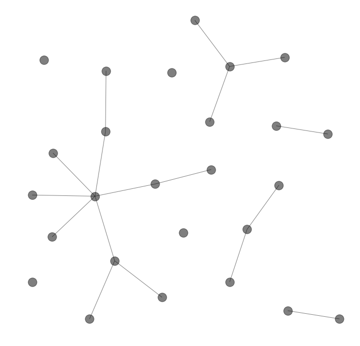
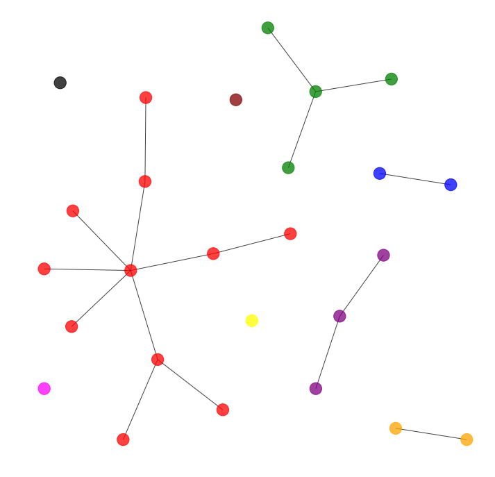
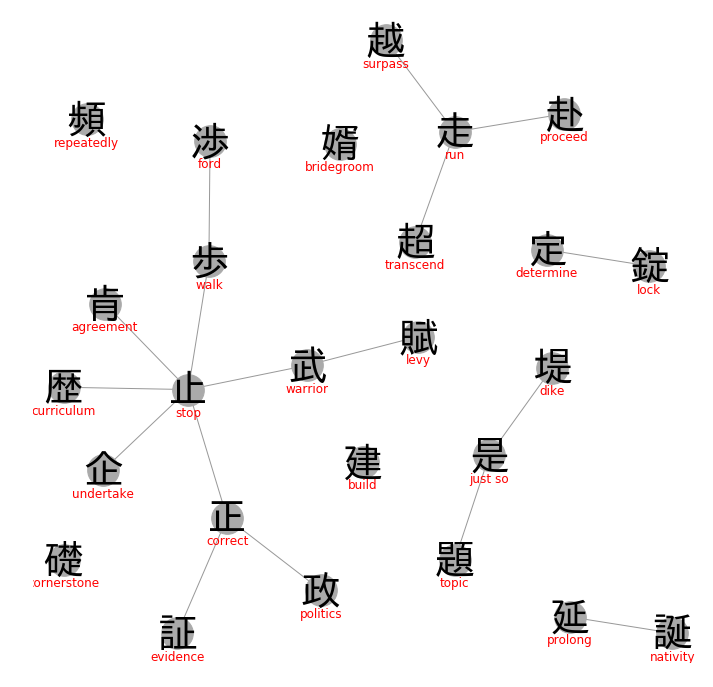
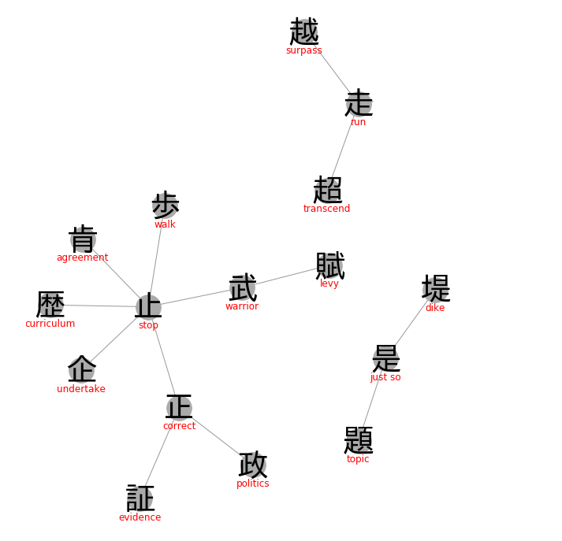

name: inverse layout: true class: center, middle, inverse --- # Fun with Python and Kanji <div class="kanji-largish"> パイソンを用いて漢字と遊びましょう </div> Michael Penkov @mpenkov .footnote[https://git.io/fA2PP] --- name: topleft layout: true --- # Japanese Writing System a _really_ quick introduction... -- <div class="kanji-largish"> <span class="katakana">パイソン</span><span class="hiragana">を</span><span class="kanji-individual">用</a><span class="hiragana">いて</a><span class="kanji-compound">漢字</a><span class="hiragana">と</a><span class="kanji-individual">遊</a><span class="hiragana">びましょう</a> </div> 1. Katakana syllables (<span class="katakana">カタカナ</a>) 2. Hiragana syllables (<span class="hiragana">ひらがな</a>) 3. Kanji compounds (<span class="kanji-compound">熟語</span>) - **Individual Kanji characters** (<span class="kanji-individual">字</span>) --- ## So, let me tell you about [Kanji](https://en.wikipedia.org/wiki/Kanji)... Ancient [logographic](https://en.wikipedia.org/wiki/Logogram) writing system originating from China. One Kanji ≈ one word/concept. Multiple Kanji ≈ one word/concept. <div class="kanji-large"> 停 電 停電 電停 </div> [A thousand Kanji](https://en.wikipedia.org/wiki/Ky%C5%8Diku_kanji) in primary school and [another thousand](https://en.wikipedia.org/wiki/J%C5%8Dy%C5%8D_kanji) in high school. -- <center> <img src='Jackie-Chan-WTF.jpg' width='40%'/> </center> Learning to **recognize**, read, pronounce and write Kanji is difficult. --- # Kanji Primer Some simple examples: <div class="kanji-large"> 月 火 水 木 金 土 日 </div> -- _Combine_ multiple Kanji together to make a single "complex" Kanji: <div class="kanji-large"> 朋 棚 林 森 明 昌 </div> -- Knowing the number of strokes in each Kanji is helpful: <div class="kanji-medium"> ー 九 土 木 本 旭 体 侍 待 倉 </div> Complex Kanji typically have a higher stroke count. -- There are thousands of Kanji in use. How can we remember them?! --- # Getting a Grip on the Kanji <div class="has-ruby kanji-large"> 金 + 失 = 鉄 </div> If you can't _say_ it, you can't _use_ it. How can we refer to these things? -- We **cheat**. We assign _our own English keyword_ to each Kanji. The keyword _may_ be related to the "meaning" of the Kanji. <div class="has-ruby kanji-large"> <ruby><span class="rb">金</span><span class="rt">metal</span></ruby> + <ruby><span class="rb">失</span><span class="rt">lose</span></ruby> = <ruby><span class="rb">鉄</span><span class="rt">iron</span></ruby> </div> -- We make up _our own story_ to connect the keyword to the Kanji, e.g.: > <span class="keyword">Iron</span> is an essential <span class="keyword">metal</span> for the human body, so don't <span class="keyword">lose</span> too much of it. The [Heisig System](https://en.wikipedia.org/wiki/Remembering_the_Kanji_and_Remembering_the_Hanzi): 80% of the time, it works *every* time. --- # Divide and Conquer Complex Kanji often consist of simpler _parts_. Some complex examples: <div class="kanji-large"> <ruby><span class="rb">露</span><span class="rt">dew</span></ruby> <ruby><span class="rb">雪</span><span class="rt">snow</span></ruby> <ruby><span class="rb">雷</span><span class="rt">thunder</span></ruby> <ruby><span class="rb">電</span><span class="rt">electric</span></ruby> </div> -- Examples of parts: <div class="kanji-medium"> <ruby><span class="rb">雨</span><span class="rt">rain</span></ruby> <ruby><span class="rb">足</span><span class="rt">foot</span></ruby> <ruby><span class="rb">各</span><span class="rt">each</span></ruby> <ruby><span class="rb">夂</span><span class="rt">walking</span></ruby> <ruby><span class="rb">口</span><span class="rt">mouth</span></ruby> <ruby><span class="rb">ヨ</span><span class="rt">broom</span></ruby> <ruby><span class="rb">田</span><span class="rt">field</span></ruby> </div> These **parts** get called different things: [部首](https://ja.wikipedia.org/wiki/%E9%83%A8%E9%A6%96), [radicals](https://kanjialive.com/214-traditional-kanji-radicals), roots, primitive components... Some parts can be Kanji themselves. Others only occur as part of something else. --- # Questions 1. How do we **organize** Kanji in a way that's easier to remember? 2. How do we **identify** Kanji that are similar to each other? 3. How do we **break down** complex Kanji into simpler parts? 4. How do we **look up** Kanji that we've never seen before? 5. How do we avoid doing the hard, manual work by ourselves? --- layout: true class: inverse, center, middle --- # [Time for some Python!](https://github.com/mpenkov/heisig/blob/master/demo.ipynb) .footnote[https://git.io/fA21v] --- layout: true name: topleft --- # Heisig Covers **2,042** commonly used Kanji, dividing them into **56** _Lessons_. Example: ```json {'#heisignumber': 846, 'indexordinal': 1626, 'kanji': '鉄', 'keyword': 'iron', 'lessonnumber': 25, 'strokecount': 13} ``` We can now refer to 2,042 Kanji using an unambiguous English _keyword_. For other Kanji, we have to improvise, but they are relatively rare. --- # [KRAD](http://www.edrdg.org/krad/kradinf.html) From the [Electronic Dictionary Research & Development Group](http://www.edrdg.org/edrdg/index.html). Decomposes **6,355** Kanji into **254** unique radicals. Examples: ``` 哀 : 衣 口 亠 愛 : 心 爪 冖 夂 旭 : 日 九 梓 : 十 辛 木 立 圧 : 土 厂 ``` Example applications: searching for Kanji by radicals (parts), handwriting recognition, **comparing Kanji**. Problems: arbitrary order of radicals, no positional information. --- # Radically Confusing Example of _different_ Kanji that have exactly the same radicals: <div class='kanji-large'> <ruby><span class="rb">日</span><span class="rt">sun</span></ruby><ruby><span class="rb">木</span><span class="rt">tree</span></ruby> 椙 杲 杳 橸 </div> -- More examples: ``` 含 吟 合 哈 戎 戈 戉 戔 可 司 叮 哥 押 抽 抻 脅 肋 脇 桂 杜 埜 甲 申 由 細 累 縲 ``` Luckily, most of these are pretty rare. --- # [CHISE](http://www.chise.org/ids/index.html) Covers **20,092** Kanji, decomposing each Kanji into smaller parts using [Polish notation](https://en.wikipedia.org/wiki/Polish_notation). <div class="kanji-largish"> <ruby><span class="rb">鉄</span><span class="rt">iron</span></ruby> <ruby><span class="rb">⿰</span><span class="rt"></span></ruby> <ruby><span class="rb">金</span><span class="rt">metal</span></ruby> <ruby><span class="rb">失</span><span class="rt">lose</span></ruby> </div> -- <div class="kanji-largish"> <ruby><span class="rb">嵐</span><span class="rt">storm</span></ruby> <ruby><span class="rb">⿱</span><span class="rt"></span></ruby> <ruby><span class="rb">山</span><span class="rt">mountain</span></ruby> <ruby><span class="rb">風</span><span class="rt">wind</span></ruby> </div> -- <div class="kanji-largish"> <ruby><span class="rb">亭</span><span class="rt">pavilion</span></ruby> <ruby><span class="rb">⿱</span><span class="rt"></span></ruby> <ruby><span class="rb">⿳</span><span class="rt"></span></ruby> <ruby><span class="rb">亠</span><span class="rt">top-hat</span></ruby> <ruby><span class="rb">口</span><span class="rt">mouth</span></ruby> <ruby><span class="rb">冖</span><span class="rt">crown</span></ruby> <ruby><span class="rb">丁</span><span class="rt">street</span></ruby> </div> -- <div></div> Total of 12 layouts (<a href="https://en.wiktionary.org/wiki/%E2%BF%B0">translingual Unicode characters</a>): <div class="kanji-large"> ⿰ ⿱ ⿸ ⿺ ⿵ ⿳ ⿴ ⿹ ⿲ ⿷ ⿻ ⿶ </div> --- # Encountering the Unknown Kanji search challenge: look up the characters below in a dictionary. <div class="kanji-large"> 顳 鸚 爨 驪 纜 鱸 鸛 </div> -- When you stumble upon Kanji you don't recognize, your options include: 1. Copy-paste into a dictionary (trivial) -- 2. Enter it using the IME (easy) -- 3. Look it up in a Kanji dictionary using the _main radical_ (tricky) -- 4. Estimate the stroke count, narrow down the results (tedious) -- 5. Enter it via handwriting recognition (tedious) -- 6. Ask a friend (potentially annoying for your Kanji-literate friend) -- 7. Give up. Pretend that you never saw it and move on with life (unrewarding) -- Armed with Python and the knowledge from the previous slides, you have more options: 8. If you recognize _any_ of the radicals, look them up via KRAD 9. If you recognize any of the parts, look them up via CHISE <div class="kanji-medium"> <ruby><span class="rb">耳</span><span class="rt">ear</span></ruby> <ruby><span class="rb">頁</span><span class="rt">page</span></ruby> <ruby><span class="rb">貝</span><span class="rt">shellfish</span></ruby> <ruby><span class="rb">女</span><span class="rt">woman</span></ruby> <ruby><span class="rb">鳥</span><span class="rt">bird</span></ruby> <ruby><span class="rb">木</span><span class="rt">tree</span></ruby> <ruby><span class="rb">大</span><span class="rt">large</span></ruby> <ruby><span class="rb">火</span><span class="rt">fire</span></ruby> <ruby><span class="rb">糸</span><span class="rt">thread</span></ruby> </div> --- # Let's talk about [Graphs](https://en.wikipedia.org/wiki/Graph_theory) Labeled vs unlabeled graphs Connected components Subgraphs Application of graphs to Kanji visualization --- # Unlabeled Graph Example The graph below has 26 *nodes* (vertices, points) and 17 *edges* (arcs, lines). <center>  </center> --- # Connected Components There are 9 *connected components* (clusters, groups) in the graph below. <center>  </center> --- # Labeled Graph Example Each node corresponds to a Kanji. Edges connect related Kanji. <center>  </center> --- # [Subgraph](https://en.wikipedia.org/wiki/Glossary_of_graph_theory_terms#subgraph) Example A subgraph containing only 16 nodes. Helps simplify complex graphs. <center>  </center> --- # Demo Time Visually identify related Kanji Study related Kanji together Reinforce "problematic" Kanji --- # Conclusion ## Stuff We Talked About - Brief introduction to Kanji - Kanji resources: Heisig, KRAD, CHISE - Basic graph theory: nodes, vertices, connected components, subgraphs - Putting it all together: visualizing Kanji graphs -- ## Future Work - Kanji pronunciation - Identifying ambiguous keywords <div class="kanji-large"> <ruby><span class="rb">超</span><span class="rt">exceed</span></ruby> <ruby><span class="rb">越</span><span class="rt">overtake</span></ruby> <ruby><span class="rb">追</span><span class="rt">chase</span></ruby> <ruby><span class="rb">逐</span><span class="rt">pursue</span></ruby> <ruby><span class="rb">収</span><span class="rt">income</span></ruby> <ruby><span class="rb">稼</span><span class="rt">earnings</span></ruby> <ruby><span class="rb">給</span><span class="rt">salary</span></ruby> </div> -- - Application to words (Kanji compounds) - Introduce directed graphs Want to collaborate? Talk to me! --- name: last-page template: inverse ## Thank you for listening! <div class="kanji-medium">ご静聴ありがとうございました。</div> Michael Penkov @mpenkov .footnote[ slides: https://git.io/fA2PP notebook: https://git.io/fA21v demo: https://kanji.now.sh ]